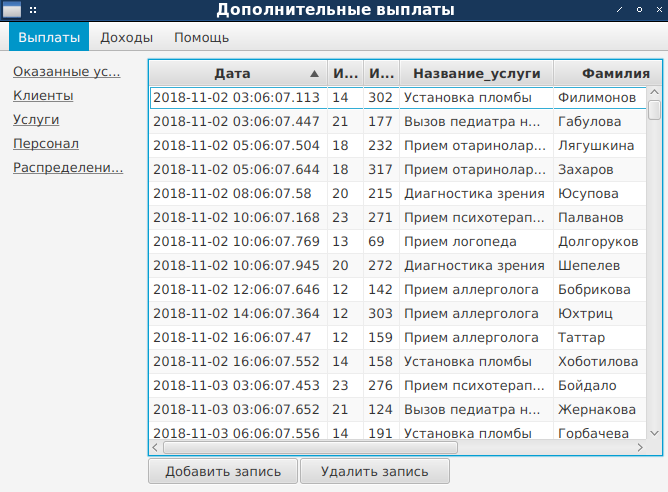
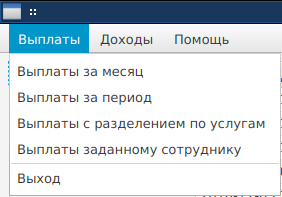
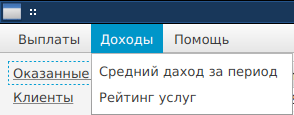
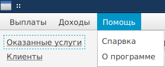
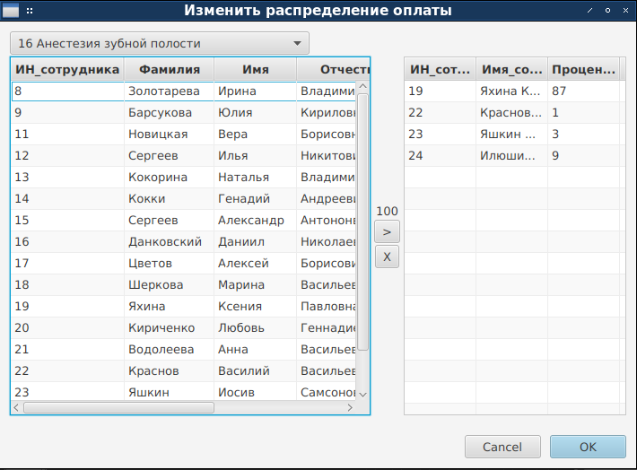

При запуске программы открывается основное окно (рис. 1). При его закрытии программа завершает работу. Кроме того,
работа программы может быть завершена нажатием на кнопку “Выход” или выбором подпункта “Выход” пункта “Выплаты”
основного меню.

Рис. 1. Главное окно приложения
В центральной части окна располагается открытая в данный момент таблица. Для удобства использования, таблица
отображает не только информацию из находящейся в базе данных таблицы, но некоторую дополнительную информацию.
Например, в таблице “Оказанные услуги”, отображены не только дата, ИН услуги и ИН клиента, но и ФИО клиента.
Сверху находится меню, содержащее пункты “Выплаты”, “Доходы”, “Помощь”. Пункты “Выплаты” (рис. 2) и “Доходы”
(рис. 3) содержат запросы к базе данных, позволяющие получить соответствующую информацию. Меню “Помощь”
(рис. 4) содержит подпункты “Справка”, содержащий данную главу отчета, и “О программе”, содержащий краткое описание
программы и данные о разработчике.

Рис. 2. Меню “Выплаты”

Рис. 3. Меню “Доходы”

Рис. 4. Меню “Помощь”
Слева находится панель, со списком таблиц, позволяющим переключаться между ними.
Снизу находятся кнопки удаления и добавления записей в соответствующую таблицу (кроме таблицы “Распределение
выплат”). Для таблицы “Распределение выплат” вместо кнопок удаления и добавления записей предусмотрена кнопка
“Изменить распределение”, которая вызывает диалог, позволяющий изменять распределение дополнительных выплат
между сотрудниками (рис. 5).

Рис. 5. Диалог изменения распределения выплат